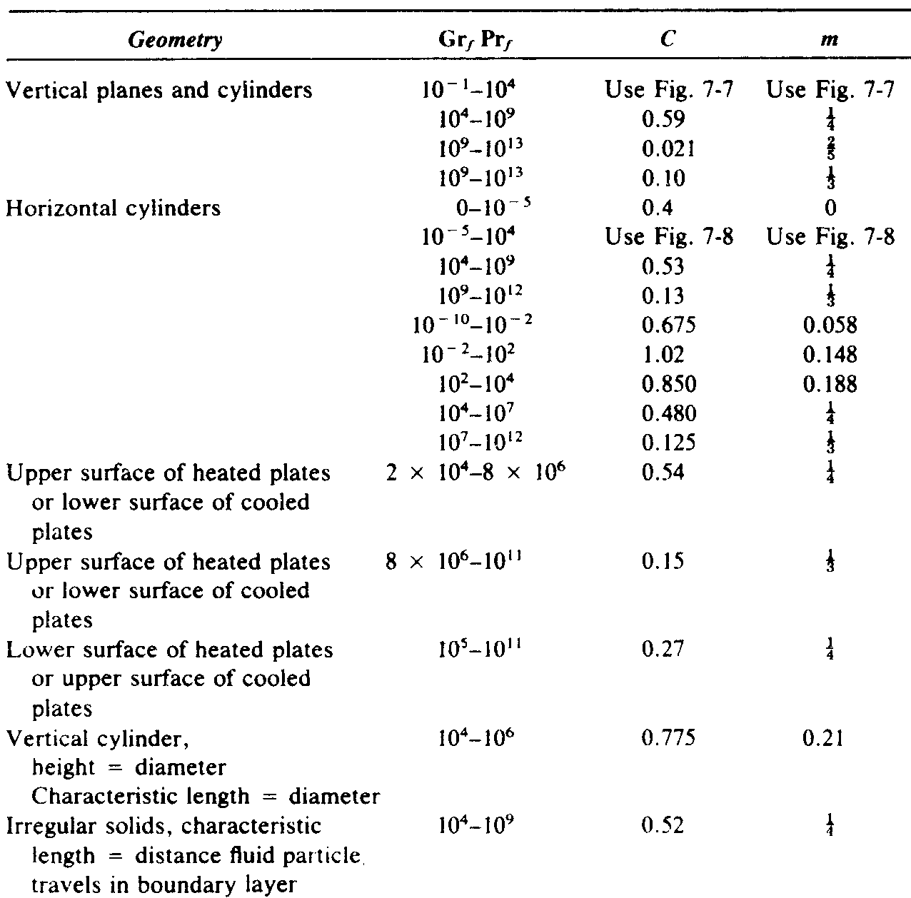

In the previous lectures, we revised the general heat flux
equation, and that layers (series) of heat transfer resistance may
be summed.
\begin{align*}
Q &= U A \Delta T = \frac{\Delta T}{R_{total}}\\
R_{total} &= R_1 + R_2 + …\\
&= 1/U_1 A_1 + 1/U_2 A_2 + …
\end{align*}
We covered
conduction
and derived the conductive
heat transfer resistances in a plate and in a pipe from the heat
equation.
\begin{align*}
R_{plate} &= \frac{X}{k A}& R_{pipe} &=
\frac{\ln\left(\frac{R_o}{R_i}\right)}{2 \pi L k}
\end{align*}
We also covered
forced convection, and revised that
we have relationships for the heat transfer coefficient
$h$
\begin{align*}
h&=\frac{k \text{Nu}}{L} & \text{Nu} &\approx C \text{Re}^m \text{Pr}^n
\end{align*}
We'll now take a look at convection in more detail.
If there are analytical expressions for convection
coefficients exist, they arise from the study of
boundary
layers.
A boundary layer is the zone near a thermal/momentum/mass
disturbance in the flow. One example is flow past a plate (above).
Obviously, it is the transport processes close to the
surface which control the overall transport.
The most successful study of these boundary layers comes
about from
von Kármán integral analysis, which is based
on the work we've studied so far.
We won't perform these analyses here (they are covered in 4th
year fluids), but understanding the connection to the behaviour
near to the surface will be vital in
convective
heat transfer, including
boiling
heat
transfer.
In forced convection, there are several dimensionless
numbers which we use to classify the flow and heat transfer.
First, we have the Nusselt number, which is just the
dimensionless form of the heat transfer coefficient.
\begin{align*}
\text{Nu} = \frac{h L}{k}
\end{align*}
It is a ratio of convective heat transfer to conduction in
a fluid layer of thickness $L$.
Dimensional analysis
tells us the Nusselt number
$\text{Nu}$
must be a function of dimensionless numbers.
\begin{align*}
\text{Nu} = f\left(\text{Re},\text{Pr},…\right)
\end{align*}
Dimensionless numbers
are very powerful in
characterising all transport problems and each describes some
balance of two transport phenomena forces/mechanisms.
To characterise the type of flow (or flow regime) the
fluid is in, we use the Reynolds number.
\begin{align*}
\text{Re}=\frac{\rho \left\langle v\right\rangle D}{\mu}
\end{align*}
where
$D$
is some characteristic length.
It's important to remember that the Reynolds number is a
ratio of the
inertial
and
viscous
stresses.
We will later find that the definition of $\text{Re}$
can
strongly depending on the
geometry
(e.g., annulus) and the
viscous behaviour
(e.g., power-law).
Unfortunately, as the Nusselt number (and therefore $h$
)
is a function of the Reynolds number, it is also highly dependent
on the geometry/flow and we must be very careful when selecting
our
empirical
expressions for
$h$.
But what about the
Prandtl number?
\begin{align*}
\text{Pr}=\frac{C_p \mu}{k}=\frac{\nu}{\alpha}
\end{align*}
where $\alpha=k\,c_p^{-1}\,\rho^{-1}$ is the thermal diffusivity.
The Prandtl number is also a ratio of two phenomena, the
momentum diffusivity
(viscosity) and the
thermal
diffusivity
(thermal conductivity).
Unlike
the Reynolds or Nusselt numbers, the Prandtl
number is only a function of the fluid properties and does not
change depending on the flow geometry.
It is a measure of the relative thickness of the momentum
and thermal boundary layers.
Lets take a look at boundary layers for heat and momentum
transfer…
A comparison of the thermal and momentum boundary
layers. The lines mark where the driving force is 1% of the
surface value. The Prandtl number is related to the relative
thickness of the flow
$\delta$
and thermal
$\delta_T$
boundary
layers.
Consider the system above. Flow passes a stationary plate
which is at a higher temperature than the bulk fluid.
This system is an idealisation of the
forced
convection
problem.
The
bulk properties
of the fluid have a subscript
$\infty$, to denote that they are the values an infinite distance
from the disturbance/plate.
Most of the transport occurs near the plate, and dotted
lines are used to indicate the extent of the boundary layer (where
the driving force (temperature/velocity difference from bulk) is
above 1%).
A comparison of the thermal and momentum boundary
layers. The lines mark where the driving force is 1% of the
surface value. The Prandtl number is related to the relative
thickness of the flow
$\delta$
and thermal
$\delta_T$
boundary
layers.
The thickness of the layers, $\delta$
and
$\delta_T$, are
measures of the strength of each mode of the transport.
If the layer is small, then the transport of the property
is strongly limited.
In laminar flow with constant wall temperature, low flow
velocity and a high Prandtl number $\text{Pr}>0.7$, we can solve
the boundary layer conduction problem (using von Kármán
integral analysis) to obtain
\begin{align*}
\frac{\delta_T}{\delta} &= \left(\frac{13}{14}\right)^{1/3}\text{Pr}^{-1/3}&
\text{Pr}&=\frac{C_p \mu}{k}=\frac{\nu}{\alpha}
\end{align*}
This shows that a Prandtl number $\text{Pr}\approx0.7$
implies the boundary layers are similar in size and
$\text{Pr}>0.7$
implies the thermal layer is smaller than the
momentum layer (and is the limiting process).
So, we now know what the Prandtl number is, a comparison
of momentum and thermal transport.
Just as we characterise the flow from laminar to turbulent
at a Reynolds number of $\text{Re} \approx 2000$.
We can characterise a transition from strong conductive
transfer for $\text{Pr}\ll 1$
to strong convective transfer for
$\text{Pr}\gg 1$.
The high Prandtl number limit is interesting, as we have high
viscosity (nice laminar systems) with low thermal
conductivity, thus only the boundary layer is important.
When we want to calculate the Nusselt number for forced
convection heat transfer, we need to evaluate the Reynolds number
and the Prandtl number for the flow.
But at what conditions do we calculate the viscosity,
thermal conductivity, and density at for these parameters? They
all depend on temperature, so which temperature do we use?
The wall conditions? The bulk conditions? Somewhere
in-between?
It is also clear from the diagram above that the
conditions change along the plate! What distance away and along
the plate do we evaluate the properties at?
There is no fundamentally right answer here, but all of
the empirical expressions in the literature have been worked out
using a consistent choice.
A comparison of the thermal and momentum boundary
layers. The Prandtl number is related to the relative thickness
of the flow
$\delta$
and thermal
$\delta_T$
boundary layers.
If we have a large open system, the
film
temperature, defined as the arithmetic mean of the wall and
bulk temperature is used by experimentalists to evaluate the
dimensionless numbers.
\begin{align*}
T_f = (T_w+T_\infty)/2
\end{align*}
But for a closed system like a pipe the
bulk
temperature
is used
\begin{align*}
T_b = (T_{fluid,in}+T_{fluid,out})/2
\end{align*}
Some final notes on forced convection heat transfer.
For a isothermal wall, with a laminar flow and with a high
Prandtl number (boundary important only), we can obtain an analytic
expression for the Nusselt number \begin{align*} \text{Nu}
&\approx 0.332 \text{Re}^{1/2} \text{Pr}^{1/3} &
\text{Pr}\ge 0.6 \end{align*}
We can see this expression is proportional to
$\text{Pr}^{1/3}$, which is proportional to the thermal boundary
layer size, and has a limitation to near the crossover point at $\text{Pr}\approx 0.7$.
However, this expression is only valid in the limits
stated above. We need other expressions for different systems.
According to dimensional analysis, we need some function
of the Reynolds number and the Prandtl number:
\begin{align*}
\text{Nu} = f\left(\text{Re}, \text{Pr}\right)
\end{align*}
One idea is to use the well developed concepts for
turbulent momentum transfer (Reynolds numbers, friction factors,
moody charts) and to try to apply it to heat transfer using some
relation involving the Prandtl number…
If we assume that momentum and heat are transported at the
same rate ($\text{Pr}\approx 0.7\approx 1$
), we can find that for turbulent
fluid flow in a pipe with heat transport we have
\begin{align*}
\text{St}=\frac{\text{Nu}}{\text{Re} \text{Pr}} \approx
\frac{C_f}{2}
\end{align*}
Which is known as the
Reynolds analogy
for pipe
flow.
This expression allows you to use a Moody chart to predict
heat transfer coefficients for turbulent flows!
This expression also defines the Stanton number
$\text{St}$, which is another dimensionless number which gives a
ratio of the heat transferred into a fluid and its thermal
capacity.
Unfortunately, this simple expression is only useful for a
limited range of flows ($\text{Pr}\approx 1$, no drag profile),
but the concept has been extended…
A highly accurate empirical expression developed by
Petukhov can yield results to within $6$
% to 10% for
well-developed turbulent flows in smooth pipes
\begin{align*}
\text{Nu} \approx \frac{(C_f/2)
\text{Re} \text{Pr}}{1.07+12.7(C_f/2)^{1/2}\left(\text{Pr}^{2/3}
-1\right)}\left(\frac{\mu_b}{\mu_w}\right)^{0.14}
\end{align*}
The promise of better accuracy is a good incentive for the
use of this equation, as the other expressions written here have
up to $\pm 25%$
error.
But this equation also has a limited range of
applicability, we need large books of tested equations to ensure
that we have a high confidence in our design!
Now, a general note on the form of these expressions for
the heat transfer coefficient.
For the many difficult cases involving turbulent flow, a
simple power law expression may be fitted to experimental data.
\begin{align*}
\text{Nu} \approx C\,\text{Re}^m\,\text{Pr}^n
\end{align*}
The power law is chosen not only because it is similar to the
laminar result, but also as it is relatively straightforward
to fit to experimental data (much like the Power-Law viscous
model, see the next lecture on dimensional analysis).
For well-developed turbulent flow in smooth pipes, a very
popular expression is given by Sieder and Tate.
\begin{align*}
\text{Nu}_{turbulent} \approx 0.023 \text{Re}^{0.8} \text{Pr}^{1/3} \left(\frac{\mu}{\mu_{wall}}\right)^{0.14}
\end{align*}
where everything should be estimated at the bulk conditions,
except
$\mu_w$
which should be estimated at the wall conditions.
This is often used along with the analytic expression for
laminar flow to provide estimates for the heat transfer
coefficient
\begin{align*}
\text{Nu}_{laminar} \approx 0.332 \text{Re}^{1/2} \text{Pr}^{1/3}
\end{align*}
However, these are the equations with possibly large
($\pm25%$
) errors, and are only valid for developed flows.
Let's move on to
natural convection.
Consider a vertical plate, which is maintained at a
higher temperature than the surrounding air.
Thanks to the flow due to convection, we will again
have a boundary layer problem!
The analysis will be similar as for forced convection,
but we must determine an alternative Reynolds-like
dimensionless parameter for convective flow.
This parameter must somehow contain the convective
flow velocity.
Convection occurs due to a change in the density of
the fluid/air when it is heated/cooled.
When the air changes density, buoyancy effects cause
the lighter air to rise and cooler heavier air will flow in to
replace it.
The amount a gas changes its density in response to a
change in temperature is given by the thermal expansion
coefficient
\begin{align*}
\beta = \frac{1}{V} \frac{\partial V}{\partial T}
\end{align*}
For an ideal gas, we have
\begin{align*}
\beta_{ideal} = \frac{1}{T}
\end{align*}
To a rough approximation, the change in volume due to
the wall heating is given by
\begin{align*}
\beta\left(T_w-T_\infty\right) L^3
\end{align*}
where
$L$
is the characteristic length of the system (wall
height in this case).
The buoyancy force on this volume is given by
\begin{align*}
g \rho \beta\left(T_w-T_\infty\right) L^3
\end{align*}
We can make this expression dimensionless using the
viscosity
\begin{align*}
\text{Gr}=\frac{g \rho^2 \beta\left(T_w-T_\infty\right)
L^3}{\mu^2}
\end{align*}
We have derived the
Grashof number
for natural
convective flow on a vertical wall.
This is a ratio of the buoyancy forces and the viscous
forces in the system, and is the analog of the Reynolds number
in forced flows.
Natural convection flows also transition to turbulent
flows once the Grashof number reaches a critical value of
about $\text{Gr}\approx 4\times10^8$.

In general, over years of experiments it has been
found that the heat transfer coefficient for natural
convection are also fitted by a power law!
\begin{align*}
\text{Nu}=C\left(\text{Gr} \text{Pr}\right)^m
\end{align*}
The coefficients for a wide range of geometries are
given in the table on the left, taken from “Heat Transfer,”
by J.P. Holman.
The previous expression for $\text{Nu}$
is only valid for
large systems (e.g., insulation on a pipe, or reactor), not for
small systems (e.g., pot of boiling liquid).
The values for the coefficients in the previous table can
only be directly used for a vertical cylinder in the case that the
diameter is much greater than the thickness of the boundary layer.
Luckily, the boundary layer thickness is on the order of a
few mm, so this is generally true.
The criterion for this is expressed in terms of the
Grashof number.
\begin{align*}
\frac{D}{L} \ge \frac{35}{\text{Gr}^{1/4}}
\end{align*}
If this is not true, the Nusselt number must be
corrected by a factor $F$
to account for the curvature, given by
\begin{align*}
F=1.3\left[(L/D)/\text{Gr}_D\right]^{1/4}+1.0
\end{align*}
All surfaces emit electromagnetic radiation at a wide
range of frequencies.
The distribution of frequencies depends on the
temperature of the material, and the energy of the radiation
depends on the frequency.
Using quantum-statistical thermodynamics, it was found
that the total energy emitted per unit area is equal to
\begin{align*}
e_{b,radiation}=\sigma T^4
\end{align*}
where
$\sigma=5.669\times10^{-8}$
W /m
${}^2$
K
${}^4$.
$e_b$
is known as the
blackbody radiation, as it
is the radiative heat emitted by the perfect radiator (the
perfect black body).
The blackness of an object is related to how much
radiation it will absorbed and emit.
Objects appear black to the eye absorb all of the
visible spectrum, but a true black body absorbs all
frequencies.
The eye is not always a good judge of blackness. Snow
and ice are essentially black for long-wavelength thermal
radiation.
To take account of this varying level of blackness, we
use a characteristic called the
emissivity
$\varepsilon$.
This is a ratio of the effectiveness of a surface to
absorbing and emitting thermal radiation, relative to an ideal
black body and its value is in the range of $0\le\varepsilon\le1$
Typical values of the emissivity range from 0.7-0.9.
Objects which are emitting thermal radiation, are also
receiving it from their surroundings.
We then need a balance between the two radiative
fluxes.
\begin{align*}
Q_{radiative} = \sigma F A_w \varepsilon \left(T^4_\infty -T^4_w\right)
\end{align*}
The value $F$
is known as the shape factor. It is
proportional to the area of the surroundings and is a function
of the geometry.
However, if the surroundings are large, it can be
shown that the shape factor limits towards $F\to1$.
\begin{align*}
Q_{radiative} \to \sigma A_w \varepsilon \left(T^4_\infty -T^4_w\right)
\end{align*}
The final part of radiative heat transfer is to note
that we can define a radiation heat transfer coefficient
$h_f$, using the definition
\begin{align*}
\frac{Q_{radiative}}{A} &= h_{radiative}\left(T_\infty -
T_w\right)\\ &= \varepsilon \sigma \left(T_\infty^4 -
T_w^4\right)
\end{align*}
Rearranging to find $h_{radiative}$, we obtain
\begin{align*}
h_{radiative} = \varepsilon \sigma \left(T_\infty^2 +
T_w^2\right)\left(T_\infty + T_w\right)
\end{align*}
We can now study radiative and convective heat
transfer at the same time by combining our transfer
coefficients
\begin{align*}
Q_{r+c} = A_w\left(h+h_{radiative}\right)\left(T_\infty - T_w\right)
\end{align*}
Note that these terms add linearly! They are not
additional resistances in series (like the insulated brick
problem), but they are parallel thermal transport processes!
Consider a thermometer placed in a room.
The walls of the house are poorly insulated and the internal surface
is at a temperature of $5^\circ$
C.
Due to central heating the thermometer reads a temperature
of $20^\circ$
C.
What is the real temperature of the air? Does radiation matter here?
The two heat transfer mechanisms acting on the thermometer are
convection and radiation.
At steady state, the heat gained/lost by convection must
equal the heat lost/gained by convection.
\begin{align*}
Q_{conv.}&=-Q_{rad.}\\
h A_t\left(T_{air}-T_t\right) &=
-\sigma \varepsilon_t A_t\left(T_{wall}^4-T^4_t\right)
\end{align*}
(We assume the radiation to/from the air is negligible
compared to the radiation to/from the wall.)
\begin{align*}
h A_t\left(T_{air}-T_t\right) =
\sigma \varepsilon_t A_t\left(T_{wall}^4-T^4_t\right)
\end{align*}
A rough estimate of a convective heat transfer coefficient
is $h\approx10$
W/m
${}^2$
K.
The emissivity of common materials ranges from
$\varepsilon\approx 0.6$
to 0.9, so lets take a worse-case value
of
$\varepsilon\approx0.9$.
Solving for the air temperature difference, we have
\begin{align*}
T_{air} - T_{T} &= \sigma \varepsilon_t\left(T_{wall}^4-T^4_t\right) / h\\
&= 5.67\times10^{-8}\times0.9\times\left(293^4-278^4\right) / 10\\
&\approx 7.13
\end{align*}
The air is actually $7^\circ$
C warmer than the
thermometer's reading!
Learning objectives
We have learnt about the numerous expressions for the
coefficient of heat transfer for
forced convection
and for
natural convection.
We have learnt about the analog of the Reynolds number for
natural convection, called the Grashof number.
\begin{align*}
\text{Gr}=\frac{g \rho^2 \beta\left(T_w-T_\infty\right)
L^3}{\mu^2}
\end{align*}
We have learnt about radiative heat transfer, and found
that for an object in large surroundings we have
\begin{align*}
Q_{convective} \to \sigma A_w \varepsilon \left(T_\infty -T_w\right)
\end{align*}
We have also defined a radiative heat transfer coefficient
\begin{align*}
h_{radiative} = \varepsilon \sigma \left(T_\infty^2 +
T_w^2\right)\left(T_\infty + T_w\right)
\end{align*}
The example covered has shown that radiative heat transfer
is very significant even for small temperatures.